raybevel is an R package that can create and visualize straight skeletons, generate offset polygons, and generate 3D roof models and 3D beveled polygons. The 3D beveled polygons can be given any arbitrary 1D bevel profile controlled by the user.
Background
Straight skeletons are geometric objects obtained by shrinking polygon boundaries at a uniform speed. These skeletons have a variety of applications, such as:
- Offsetting polygons: Creating inner margins for a given polygon.
- Roof designs: Generating planar straight-line drawings that represent the roof of a structure.
- Beveling: Designing roof structures with sloping sides.
raybevel generates straight skeletons from polygons and uses these structures to generate 3D meshes and offset polygons.
Features
Skeleton Generation: Create straight skeletons from polygons, with or without holes. Supports raw polygons and {sf} objects.
Polygon Offsetting: Generate inset polygons.
3D Roof Generation and 3D Beveling: Create and visualize simple and complex beveled roofs based on straight skeletons.
Visualization: Plot straight skeletons and offset polygons.
Installation
raybevel can be installed from Github:
install.packages("remotes")
remotes::install_github("tylermorganwall/raybevel")
library(spData)Examples
First, let’s load the library and generate a polygon with holes.
library(raybevel)
# Define a simple polygon
vertices = matrix(c(0, 0, 7, 0, 7, 7, 0, 7, 0, 0), ncol = 2, byrow = TRUE) - 3.5
# Holes inside the polygon
hole_1 = matrix(c(1, 1, 2, 1, 2, 2, 1, 2, 1, 1), ncol = 2, byrow = TRUE)[5:1, ] - 3.5
hole_2 = matrix(c(5, 5, 6, 5, 6, 6, 5, 6, 5, 5), ncol = 2, byrow = TRUE)[5:1, ] - 3.5
plot.new()
par(mai = c(0, 0, 0, 0))
plot(vertices, type = "n", xlim = c(-4, 4), ylim = c(-4, 4), xlab = "", ylab = "",
xaxt = 'n', yaxt = 'n', frame.plot = FALSE, asp = 1)
polygon(vertices, col = "lightblue")
polygon(hole_1, col = "white")
polygon(hole_2, col = "white")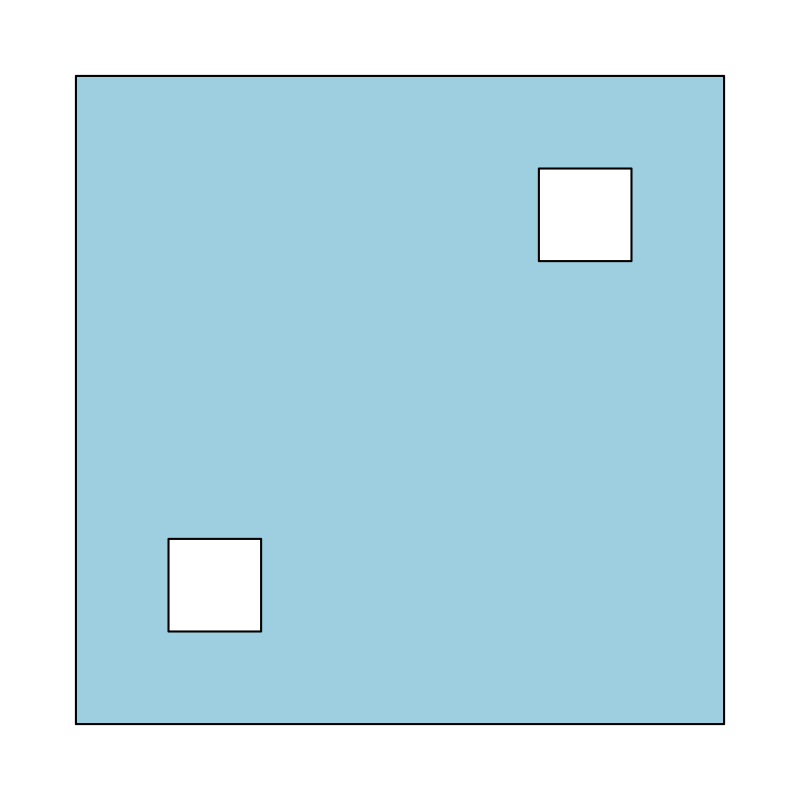
dev.off()
#> null device
#> 1Generate the straight skeleton. This plots arrows indicating the directionality of the links, which either point up-roof or along constant distance contours.
skeleton = skeletonize(vertices, holes = list(hole_1, hole_2))
plot_skeleton(skeleton)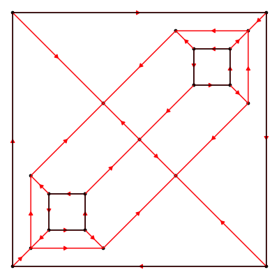
Now, we can offset this polygon inwards:
offset_polygon = generate_offset_polygon(skeleton, offset = 1.2)
offset_polygon
#> [[1]]
#> [[1]]
#> $offset_1.200000_1
#> x y
#> 1 2.3 -2.3
#> 2 2.3 0.3
#> 3 0.3 0.3
#> 4 0.3 2.3
#> 5 -2.3 2.3
#> 6 -2.3 -0.3
#> 7 -0.3 -0.3
#> 8 -0.3 -2.3
#>
#> attr(,"class")
#> [1] "rayskeleton_offset_polygons" "list"
#> attr(,"number_polygons")
#> [1] 1
#>
#> attr(,"class")
#> [1] "rayskeleton_offset_polygons_collection"
#> [2] "list"
#> attr(,"skeleton")
#> $nodes
#> id x y time edge
#> 1 1 -3.5 -3.5 0.0 TRUE
#> 2 2 3.5 -3.5 0.0 TRUE
#> 3 3 3.5 3.5 0.0 TRUE
#> 4 4 -3.5 3.5 0.0 TRUE
#> 5 5 -2.5 -2.5 0.0 TRUE
#> 6 6 -2.5 -1.5 0.0 TRUE
#> 7 7 -1.5 -1.5 0.0 TRUE
#> 8 8 -1.5 -2.5 0.0 TRUE
#> 9 9 1.5 1.5 0.0 TRUE
#> 10 10 1.5 2.5 0.0 TRUE
#> 11 11 2.5 2.5 0.0 TRUE
#> 12 12 2.5 1.5 0.0 TRUE
#> 13 13 -3.0 -3.0 0.5 FALSE
#> 14 14 -3.0 -1.0 0.5 FALSE
#> 15 15 3.0 1.0 0.5 FALSE
#> 16 16 -1.0 -3.0 0.5 FALSE
#> 17 17 3.0 3.0 0.5 FALSE
#> 18 18 1.0 3.0 0.5 FALSE
#> 19 19 0.0 0.0 1.5 FALSE
#> 20 20 -1.0 1.0 2.5 FALSE
#> 21 21 1.0 -1.0 2.5 FALSE
#>
#> $links
#> source destination edge source_time destination_time
#> 1 12 11 TRUE 0.0 0.0
#> 2 11 10 TRUE 0.0 0.0
#> 3 10 9 TRUE 0.0 0.0
#> 4 9 12 TRUE 0.0 0.0
#> 5 8 7 TRUE 0.0 0.0
#> 6 7 6 TRUE 0.0 0.0
#> 7 6 5 TRUE 0.0 0.0
#> 8 5 8 TRUE 0.0 0.0
#> 9 4 3 TRUE 0.0 0.0
#> 10 3 2 TRUE 0.0 0.0
#> 11 2 1 TRUE 0.0 0.0
#> 12 1 4 TRUE 0.0 0.0
#> 13 1 13 FALSE 0.0 0.5
#> 14 3 17 FALSE 0.0 0.5
#> 15 5 13 FALSE 0.0 0.5
#> 16 6 14 FALSE 0.0 0.5
#> 17 8 16 FALSE 0.0 0.5
#> 18 10 18 FALSE 0.0 0.5
#> 19 11 17 FALSE 0.0 0.5
#> 20 12 15 FALSE 0.0 0.5
#> 21 7 19 FALSE 0.0 1.5
#> 22 9 19 FALSE 0.0 1.5
#> 23 2 21 FALSE 0.0 2.5
#> 24 4 20 FALSE 0.0 2.5
#> 25 13 16 FALSE 0.5 0.5
#> 26 13 14 FALSE 0.5 0.5
#> 27 15 17 FALSE 0.5 0.5
#> 28 17 18 FALSE 0.5 0.5
#> 29 14 20 FALSE 0.5 2.5
#> 30 15 21 FALSE 0.5 2.5
#> 31 16 21 FALSE 0.5 2.5
#> 32 18 20 FALSE 0.5 2.5
#> 33 19 20 FALSE 1.5 2.5
#> 34 19 21 FALSE 1.5 2.5
#>
#> attr(,"class")
#> [1] "rayskeleton"
#> attr(,"original_vertices")
#> x y
#> [1,] -3.5 -3.5
#> [2,] 3.5 -3.5
#> [3,] 3.5 3.5
#> [4,] -3.5 3.5
#> attr(,"original_holes")
#> attr(,"original_holes")[[1]]
#> x y
#> [1,] -2.5 -2.5
#> [2,] -2.5 -1.5
#> [3,] -1.5 -1.5
#> [4,] -1.5 -2.5
#>
#> attr(,"original_holes")[[2]]
#> x y
#> [1,] 1.5 1.5
#> [2,] 1.5 2.5
#> [3,] 2.5 2.5
#> [4,] 2.5 1.5
#>
#> attr(,"number_offsets")
#> [1] 1
#> attr(,"original_vertices")
#> x y
#> [1,] -3.5 -3.5
#> [2,] 3.5 -3.5
#> [3,] 3.5 3.5
#> [4,] -3.5 3.5
#> attr(,"original_holes")
#> attr(,"original_holes")[[1]]
#> x y
#> [1,] -2.5 -2.5
#> [2,] -2.5 -1.5
#> [3,] -1.5 -1.5
#> [4,] -1.5 -2.5
#>
#> attr(,"original_holes")[[2]]
#> x y
#> [1,] 1.5 1.5
#> [2,] 1.5 2.5
#> [3,] 2.5 2.5
#> [4,] 2.5 1.5
#>
#>
#> attr(,"class")
#> [1] "rayskeleton_polygons" "list"
plot_offset_polygon(offset_polygon, skeleton = skeleton)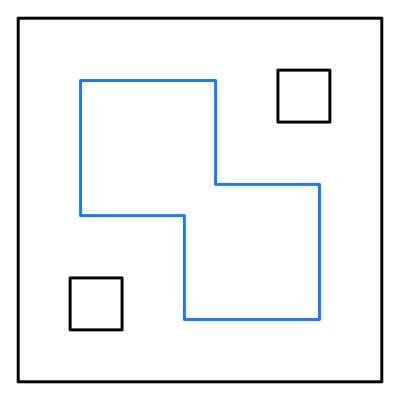
We can also plot multiple offsets and use color palettes.
library(patchwork)
offset_polygon = generate_offset_polygon(skeleton, offset = seq(0, 2.5, by = 0.1)+0.05)
plot_skeleton(skeleton, arrow_color = "black", polygon_color = "black") +
plot_offset_polygon(offset_polygon, skeleton = skeleton, plot_original_polygon = TRUE)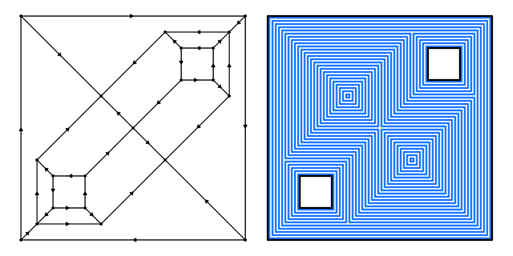
Let’s design a simple roof and render it with rayrender. When base_height is less than the vertical offset (default of 0), the sides of the polygon will also be extruded.
library(rayrender)
library(rayvertex)
roof = generate_roof(skeleton)
generate_ground(depth = -0.5, material = diffuse(color = "grey", checkercolor = "white")) |>
add_object(raymesh_model(roof, material = diffuse(color = "dodgerblue"))) |>
add_object(sphere(y = 20, x = 0, z = -10, material = light(intensity = 200))) |>
render_scene(lookfrom = c(10, 20, 0), sample_method = "sobol_blue", fov = 25,
min_variance = 1e-6, clamp_value = 10, samples = 256, width = 800, height = 800)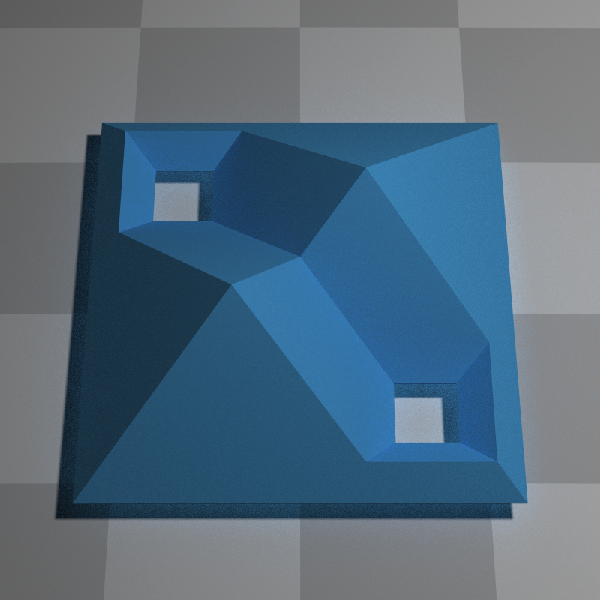
And here is a beveled roof (here, setting the base height to the level of the ground, which generates the sides of the polygon as well):
roof_bevel = generate_beveled_polygon(skeleton, base = TRUE, base_height = -0.5,
bevel_offsets = generate_bevel("circular", max_height = 0.5,
bevel_end = 0.5),)
generate_ground(depth = -0.5, material = diffuse(color = "grey", checkercolor = "white")) |>
add_object(raymesh_model(roof_bevel, material = diffuse(color = "dodgerblue"), override_material = TRUE)) |>
add_object(sphere(y = 15, x = 0, z = -10, material = light(intensity = 200))) |>
render_scene(lookfrom = c(10, 20, 0), sample_method = "sobol_blue", fov = 25,
min_variance = 1e-6, clamp_value = 10, samples = 256, width = 800, height = 800)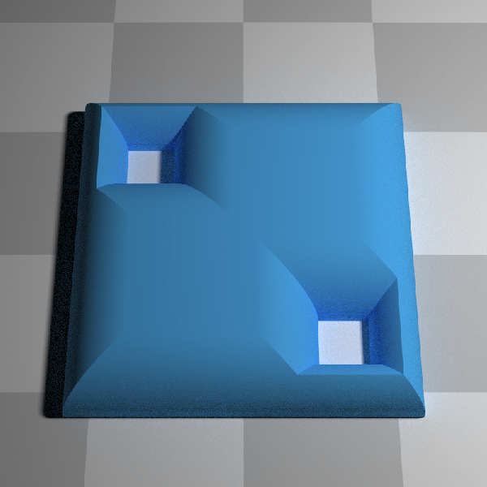
Multiple bevels are also supported (here, we use raw distance offsets, rather than percentage):
roof_bevel_multi = generate_beveled_polygon(skeleton,
bevel_offsets = c(0.25, 0.5, 1, 1.5, 2),
bevel_heights = c(0.25, 0.25, 0.5, 0.5, 0.75),
raw_offsets = TRUE, base = TRUE, base_height = -0.5)
generate_ground(depth = -0.5, material = diffuse(color = "grey", checkercolor = "white")) |>
add_object(raymesh_model(roof_bevel_multi, material = diffuse(color = "dodgerblue"), override_material = TRUE)) |>
add_object(sphere(y = 15, x = 0, z = -10, material = light(intensity = 200))) |>
render_scene(lookfrom = c(10, 20, 0), sample_method = "sobol_blue", fov = 25,
min_variance = 1e-6, clamp_value = 10, samples = 256, width = 800, height = 800)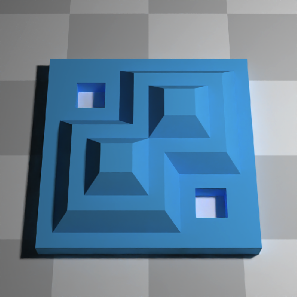
You can use this to generate smooth variations in roof height:
roof_bevel_multi = generate_beveled_polygon(skeleton, base_height = -0.5,
bevel_offsets = seq(0, 2.5, by = 0.02),
bevel_heights = 1 - exp(-seq(0, 2.5, by = 0.02) * 10),
raw_heights = TRUE,
raw_offsets = TRUE)
generate_ground(depth = -0.5, material = diffuse(color = "grey", checkercolor = "white")) |>
add_object(raymesh_model(roof_bevel_multi, material = diffuse(color = "dodgerblue"), override_material = TRUE)) |>
add_object(sphere(y = 15, x = 0, z = -10, material = light(intensity = 200))) |>
render_scene(lookfrom = c(10, 20, 0), sample_method = "sobol_blue", fov = 25,
min_variance = 1e-6, clamp_value = 10, samples = 256, width = 800, height = 800)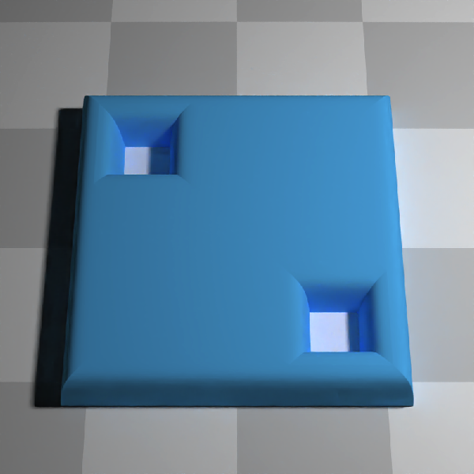
And you can specify more complex functions for bevel height as well:
roof_bevel_multi_sin = generate_beveled_polygon(skeleton,
bevel_offsets = seq(0,2.5,by=0.02),
bevel_heights = abs(sinpi(exp(seq(0,2.5,by=0.02))/2))/2,
base = TRUE, vertical_offset=0.5, base_height = -0.5,
raw_offsets = TRUE)
generate_ground(depth = -0.5,material = diffuse(color="grey", checkercolor = "white")) |>
add_object(raymesh_model(roof_bevel_multi_sin, material = diffuse(color="dodgerblue"), override_material = TRUE)) |>
add_object(sphere(y=15,x=0,z=-10,material=light(intensity = 200))) |>
render_scene(lookfrom=c(10,20,0), sample_method = "sobol_blue",fov=25, ortho_dimensions = c(8,8),
min_variance = 1e-6, clamp_value = 10, samples = 256, width=800,height=800)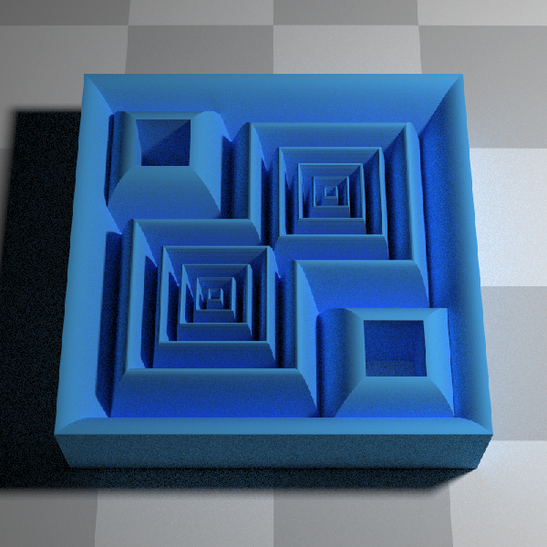
You can also plot {sf} objects. Here, we generate a roof in the shape of California.
library(rayvertex)
library(sf)
# Load US states data and extract California
us_states = spData::us_states
california = us_states[us_states$NAME == "California",]
cali_skeleton = skeletonize(california) # Skeletonize the California shape
# Generate and transform the roof model
roof_cali = generate_roof(cali_skeleton, base = TRUE, sides = TRUE, vertical_offset = 1, base_height = 0,
angle = 30) |>
center_mesh() |>
translate_mesh(c(0,1,0))
# Render the scene with the California roof model
generate_ground(depth = -0.1, material = diffuse(color="grey50", checkercolor = "white", checkerperiod = 0.5)) |>
add_object(raymesh_model(roof_cali, material = diffuse(color = "purple"), override_material = TRUE)) |>
add_object(sphere(y=20, x=20, z=-50, radius=10, material=light(color="white", intensity = 20))) |>
add_object(sphere(y=20, x=30, z=50, radius=10, material=light(color="orange", intensity = 20))) |>
render_scene(lookfrom=c(0,10,-5), camera_up=c(0,0,1), lookat=c(0,0,0.25),
sample_method = "sobol_blue", fov=0, ortho_dimensions = c(12,12),
min_variance = 0, clamp_value = 10, samples = 256, width=800, height=800)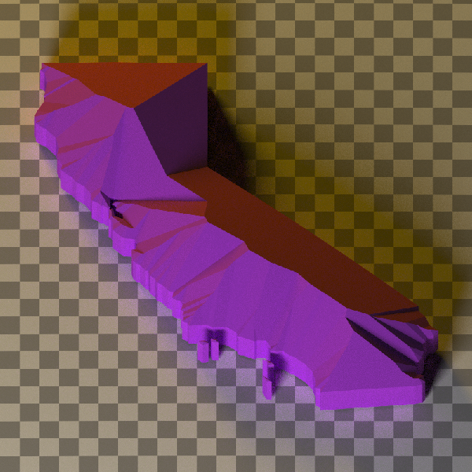
We can also generate a complex beveled polygon with generate_beveled_polygon(). We’ll first generate and plot our more complex bevel:
bevel = generate_complex_bevel(c("bump", "exp"),
bevel_start = c(0,0.3),
bevel_end = c(0.1,0.6),
reverse = c(F,F),
segment_height = c(0.05,0.2),
plot_bevel = TRUE) 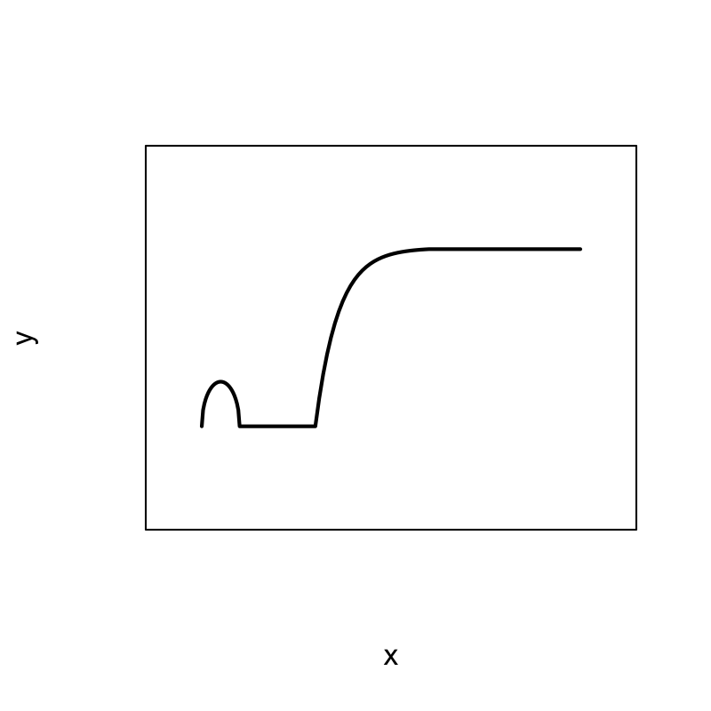
Now let’s create a vertically-oriented (by turning swap_yz = FALSE 3D polygon of California and render it as a glossy, double-sided model.
ca_model = generate_beveled_polygon(cali_skeleton, vertical_offset = 0.2, sides = TRUE, double_sided = TRUE,
bevel_offsets = bevel, swap_yz = FALSE,
material = rayvertex::material_list(diffuse = "purple"))
# Rendering the 3D model
ca_model |>
rayvertex::center_mesh() |>
raymesh_model(y = 1.5, material = glossy(color = "purple", gloss = 0.8)) |>
add_object(generate_studio(depth = -4, distance = -15,
material = diffuse(color = "grey50", checkercolor = "grey20"))) |>
add_object(xy_rect(y = 15, x = 5, z = 60, xwidth = 100, ywidth = 50,
flipped = TRUE, angle = c(0, 45, 0),
material = light(intensity = 3))) |>
render_scene(lookfrom = c(10, 10, 50), lookat = c(0, 1.5, 1),
sample_method = "sobol_blue", samples = 256, clamp_value = 10,
width = 800, height = 800, fov = 15, ortho_dimensions = c(10, 10))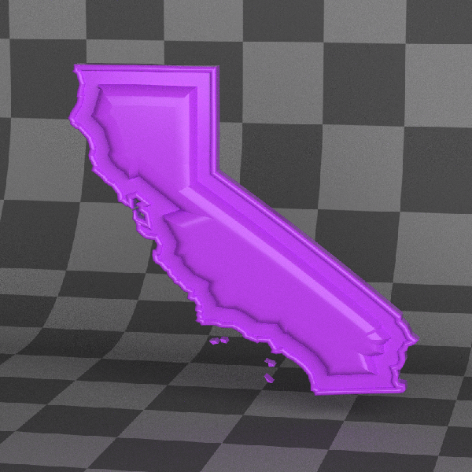